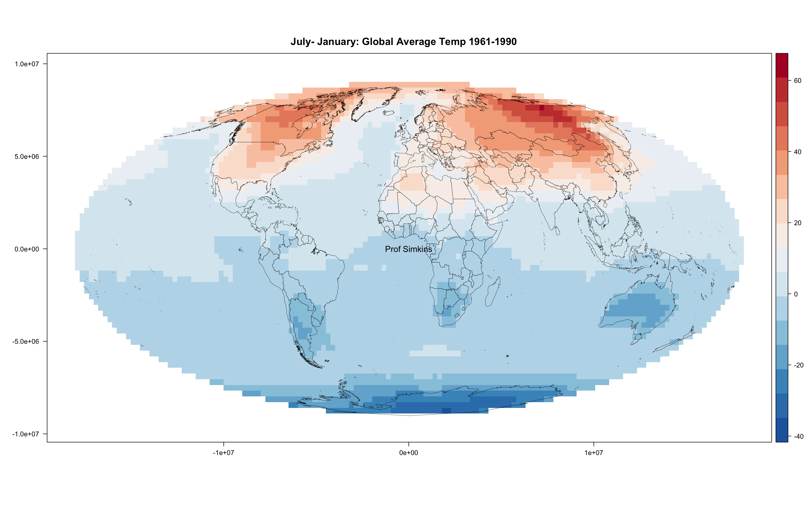

9 Reprojecting & Writing Rasters
This week work on handling raster datasets that have undesirable projections. We’ll reproject these datasets and then write them to a new datafile that we can use in the future.
9.1 Indexing Data
## [,1] [,2] [,3] [,4]
## [1,] 1 5 9 13
## [2,] 2 6 10 14
## [3,] 3 7 11 15
## [4,] 4 8 12 16## [1] 10## [,1] [,2]
## [1,] 5 13
## [2,] 7 15## [,1] [,2] [,3]
## [1,] 5 9 13
## [2,] 6 10 14
## [3,] 7 11 15## [,1] [,2] [,3] [,4]
## [1,] 1 5 9 13
## [2,] 2 6 10 14## [,1] [,2]
## [1,] 1 5
## [2,] 2 6
## [3,] 3 7
## [4,] 4 8## [1] 1 5 9 13## [1] 4 4##In Class Exercise:
Starting with this code…
Make this matrix….
## [,1] [,2] [,3] [,4]
## [1,] 1 10 18 26
## [2,] 47 47 47 47
## [3,] 6 14 22 39
## [4,] 8 16 24 329.2 Resampling and Reprojecting
This week we’ll be working an example with globalTemClim1961-1990.nc. This is Global Temperature climatology from 1961 to 1990. We’ll look at resampling this raster to a different size (resolution). Next, we’ll reproject this dataset. Reprojection and resampling are a frequent task for spatial datasets because the Earth isn’t flat (despite what your distant relative on Facebook might think). Earth’s shape (oblate spheroid) presents challenging projection issues.
# load in the packages
library(raster)
library(rasterVis)
library(maptools) # also loads sp package
# load in dataset directly via raster package, specify varname which is 'tem' for 'temperature'
temClim = raster("../datasets/globalTemClim1961-1990.nc", varname = 'tem', band=1)
temClim## class : RasterLayer
## band : 1 (of 12 bands)
## dimensions : 36, 72, 2592 (nrow, ncol, ncell)
## resolution : 5, 5 (x, y)
## extent : -180, 180, -90, 90 (xmin, xmax, ymin, ymax)
## crs : +proj=longlat +datum=WGS84 +no_defs
## source : /Users/james/Documents/Github/geog473-673/datasets/globalTemClim1961-1990.nc
## names : CRU_Global_1961.1990_Mean_Monthly_Surface_Temperature_Climatology
## z-value : 1
## zvar : tem# Create a new, blank raster that has a totally different sizing
newRaster = raster(nrow = 180, ncol = 360)
newRaster## class : RasterLayer
## dimensions : 180, 360, 64800 (nrow, ncol, ncell)
## resolution : 1, 1 (x, y)
## extent : -180, 180, -90, 90 (xmin, xmax, ymin, ymax)
## crs : +proj=longlat +datum=WGS84 +no_defs#resample the temClim raster to the resizedRaster
resTemClim = resample(x=temClim, y=newRaster, method='bilinear') # can be set to nearest neighbor using 'ngb' method
resTemClim## class : RasterLayer
## dimensions : 180, 360, 64800 (nrow, ncol, ncell)
## resolution : 1, 1 (x, y)
## extent : -180, 180, -90, 90 (xmin, xmax, ymin, ymax)
## crs : +proj=longlat +datum=WGS84 +no_defs
## source : memory
## names : CRU_Global_1961.1990_Mean_Monthly_Surface_Temperature_Climatology
## values : -48.8, 32 (min, max)#define new projection as robinson via a proj4 string. Note that this can also be achieved
# using EPSG codes with the following - "+init=epsg:4326" for longlat
newproj <- CRS("+proj=robin +lon_0=0 +x_0=0 +y_0=0 +ellps=WGS84 +datum=WGS84 +units=m +no_defs" )
newproj## CRS arguments:
## +proj=robin +lon_0=0 +x_0=0 +y_0=0 +datum=WGS84 +units=m +no_defs# reproject the raster to the new projection
projTemClim = projectRaster(resTemClim,crs=newproj)
projTemClim## class : RasterLayer
## dimensions : 171, 372, 63612 (nrow, ncol, ncell)
## resolution : 94500, 107000 (x, y)
## extent : -17570274, 17583726, -9136845, 9160155 (xmin, xmax, ymin, ymax)
## crs : +proj=robin +lon_0=0 +x_0=0 +y_0=0 +datum=WGS84 +units=m +no_defs
## source : memory
## names : CRU_Global_1961.1990_Mean_Monthly_Surface_Temperature_Climatology
## values : -48.15074, 31.77626 (min, max)data(wrld_simpl)
plt <- levelplot(resTemClim, margin=F, par.settings=BuRdTheme,
main="January Global Average Temp 1961-1990")
plt + layer(sp.lines(wrld_simpl, col='black', lwd=0.4))# convert the wrld_simpl land polygons to the robinson projection
wrld_simpl = spTransform(wrld_simpl, CRS("+proj=robin +lon_0=0 +x_0=0 +y_0=0 +ellps=WGS84 +datum=WGS84 +units=m +no_defs" ))
plt <- levelplot(projTemClim, margin=F, par.settings=BuRdTheme,
main="January Global Average Temp 1961-1990")
plt + layer(sp.lines(wrld_simpl, col='black', lwd=0.4))
9.3 PNGs
The png() function is a function that saves a plot to png. After we invoke the function and fill out the arguments, we need to execute the plot code between the png() function and dev.off(). dev.off() tells R that you’re done adding things to the plot and that it can be done plotting.
9.4 Writing Rasters
writeRaster(x=projTemClim, filename="~/Downloads/projectedTemClim1961-1990.tif", format='GTiff',
varname="Temperature", longname="Global Average Temperature January 1960-1990",
xname="lon", yname="lat")You can save these rasters in a variety of formats. If you’re interested in looking them up, run help(writeRaster) and read about the format argument.
9.5 Assignment
- Load in globalTemClim1961-1990.nc
- Extract data for January and July
- Find difference between two months globally
- Enhance resolution 2x using nearest neighbor method
- (hint: run help(resample) if you get stuck)
- Plot in mollwide projection
- (“+proj=moll +lon_0=0 +x_0=0 +y_0=0 +datum=WGS84 +units=m +no_defs”)
- Write raster to NetCDF
- Upload PNG and netCDF file to Canvas under week 5 assignment

9.6 Basic Plotting
R has a plethora of plotting packages, tools, and techniques. Although more popular visualization methods require the installation of other packages, the base plotting package in R can be customized to look professional.